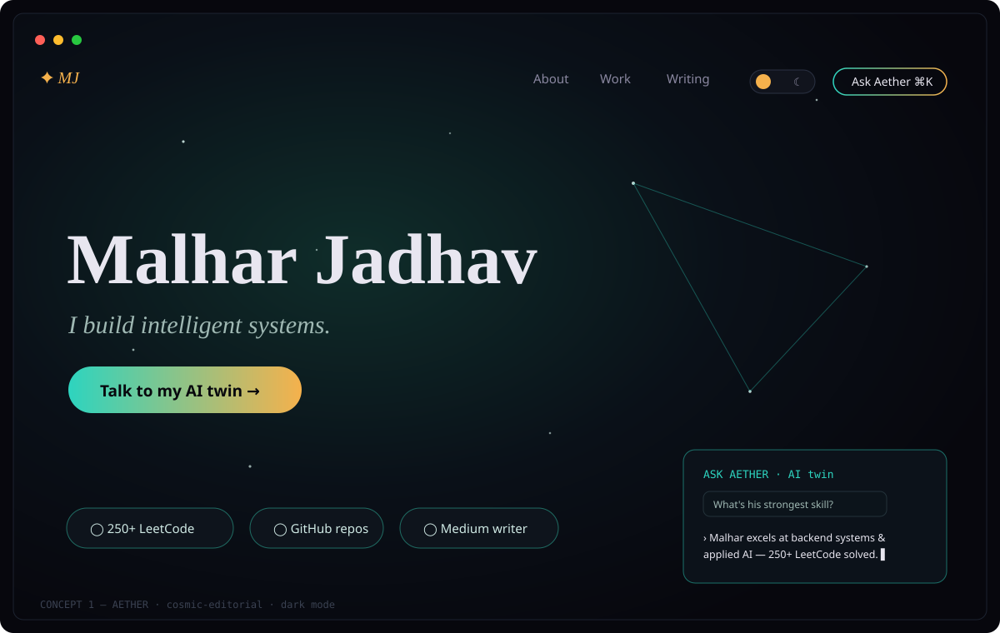
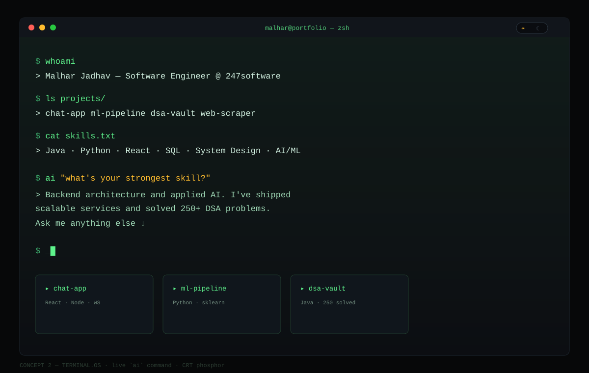
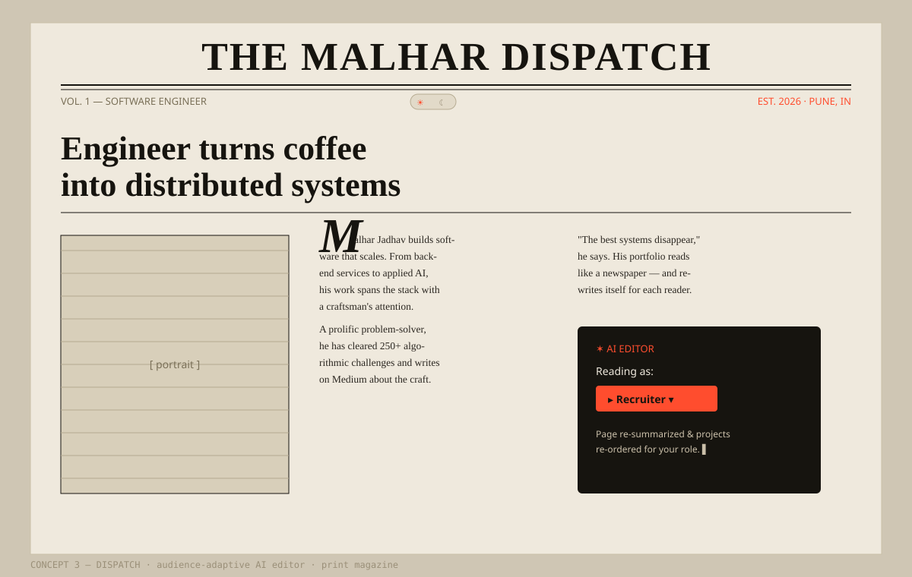
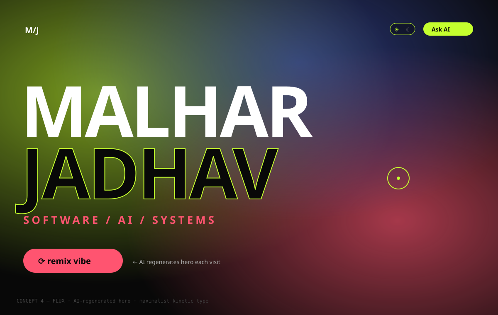
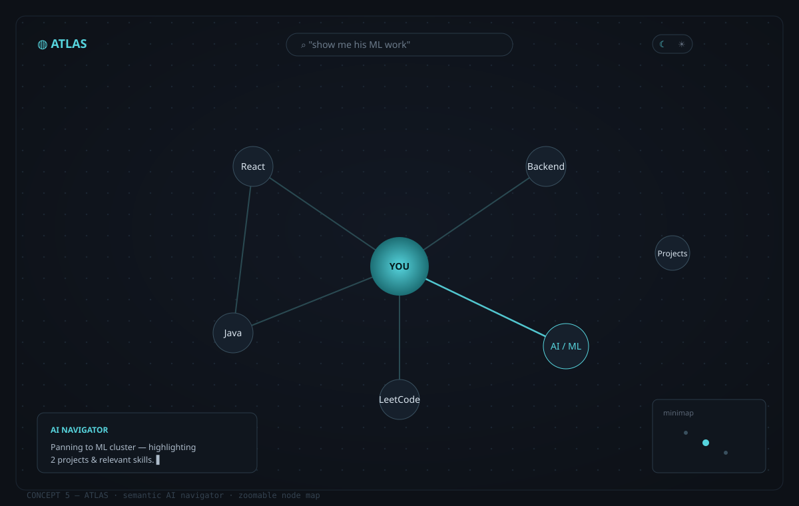
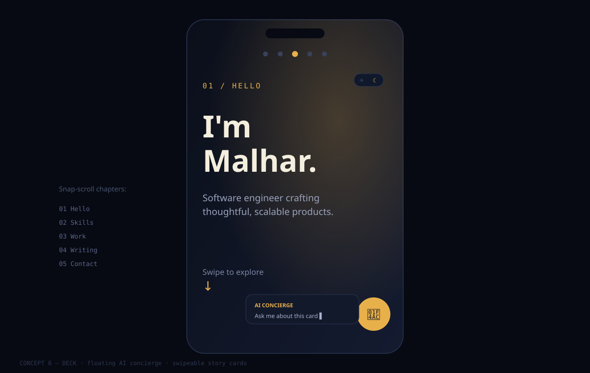

Malhar Jadhav — Portfolio Concepts
6 directions · each AI-integrated · dark/lite (sun/moon) · React + Tailwind + shadcn.

1 · AETHERtop pick
Cosmic observatory + chat-with-your-AI-twin (⌘K).

2 · TERMINAL.OStop pick
Retro dev console with a live ai "question" command.

3 · DISPATCH
Print magazine that AI-rewrites itself per reader.

4 · FLUX
Loud maximalist with an AI-regenerated hero.

5 · ATLAS
Calm zoomable node-map with a semantic AI navigator.

6 · DECK
Swipeable story cards with a floating AI concierge.